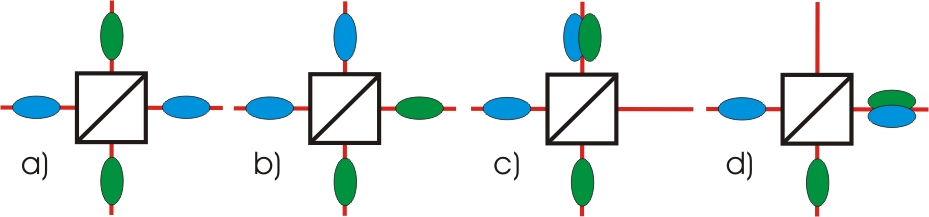
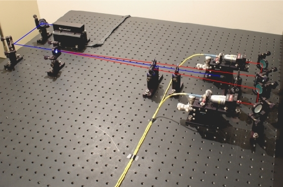

Hong-Ou-Mandel Interferenz Kapitel 1:
Strahlteiler und Ununterscheidbarkeit
In diesem Kapitel werden zunächst die Möglichkeiten zweier einzelner Photonen am Strahlteiler betrachtet. Das Phänomen der Hong-Ou-Mandel Interferenz tritt nur auf, wenn beide Photonen absolut ununterscheidbar sind. Die Bedeutung der Ununterscheidbarkeit wird weiter unten erläutert.
Möglichkeiten an einem Strahlteiler:
Wenn zwei einzelne Quantenobjekte auf einen symmetrischen Strahlteilerwürfel treffen ergeben sich vier Möglichkeiten, auf welche Weise die Quantenobjekte den Strahlteiler verlassen können (Abb. 1). Entweder beide Quantenobjekte verlassen den Strahlteiler auf verschiedenen Wegen (Abb. 1 a, b) oder beide Quantenobjekte verlassen den Strahlteiler auf dem gleichen Weg (Abb. 1 c, d). Jede dieser vier Möglichkeiten sollte eigentlich gleichwahrscheinlich sein.

Abb. 1: Vier Möglichkeiten, wie zwei unterscheidbare Quantenobjekte einen symmetrischen Strahlteiler verlassen können.
Ununterscheidbarkeit der beiden Photonen:
Um das Quantenphänomen zu entdecken, müssen beide Photonen beim Auftreffen auf den Strahlteiler absolut ununterscheidbar sein. Zwei Photonen haben jedoch viele Eigenschaften, mit denen sie unterschieden werden können: Polarisation, Wellenlänge und Ankunftszeit auf den Strahlteilerwürfel.
Polarisation:
Damit die beiden Photonen nicht durch die Polarisation unterschieden werden können, müssen beide Photonen exakt die gleiche Polarisation besitzen. Die Photonen aus der Photonenpaarquelle sind bereits beide gleich polarisiert (vertikal) und werden im Glasfaserkabel zum eigentlichen Experiment transportiert. In normalen Glasfaserkabeln bleibt die Polarisation jedoch nicht erhalten. Zum Einsatz kommen daher spezielle polarisationserhaltende Glasfaserkabel. Beide Photonen sind somit beim Auftreffen auf den Strahlteilerwürfel nahezu gleich polarisiert.Wellenlänge:
Damit die beiden Photonen nicht durch die Wellenlänge unterschieden werden können, müssen beide Photonen exakt die gleiche Wellenlänge besitzen. Die Photonenpaarquelle sendet allerdings Photonenpaare aus, die bis zu ca. 80nm unterschiedliche Wellenlänge besitzen können. Direkt vor der Einkopplung in die beiden Glasfaserkabel stehen deshalb optische Filter (Bandpassfilter: 810±10nm), die nur Photonen aus einem bestimmten Wellenlängenbereich (800-820nm) transmittieren.Ankunftszeit:
Damit die beiden Photonen nicht durch die Ankunftszeit auf den Strahlteilerwürfel unterschieden werden können, müssen beide Photonen exakt zur gleichen Zeit dort auftreffen. Die Ankunftszeit wird im Experiment durch eine verschiebbare Wegstrecke variiert.
Quelle für zwei einzelne Photonen:
In unseren Experimenten werden als Quantenobjekte einzelne Photonen verwendet. Wir haben das Experiment in zwei Bereiche aufgeteilt: Einzelphotonenquelle und Strahlteilerwürfel. Zunächst müssen zwei einzelne und räumlich getrennte Photonen erzeugt werden. Dies wird mit Hilfe des Prozesses der parametrischen Fluoreszenz in einem nichtlinearen Kristall realisiert (siehe unter Grundlagen und Koinzidenzen). Beide Photonen verlassen den nichtlinearen Kristall in unterschiedlichen Winkeln und werden in die gelben Glasfaserkabel eingekoppelt (Abb. 2). Mit Hilfe der Glasfaserkabel können die beiden einzelnen Photonen zum eigentlichen Experiment mit dem Strahlteiler transportiert werden. Die Durchführung des Experimentes erfolgt im nächsten Kapitel.

Abb. 2: Quelle für Photonenpaare: Kristall (links) und Fasereinkopplung (rechts)
Zum Kapitel 2: Durchführung des Experimentes [klick]
Zurück zur Übersicht [klick]
Autor: P. Bronner, Juli 2008